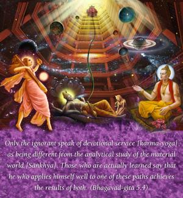

Only the ignorant speak of devotional service [karma-yoga] as being different from the analytical study of the material world [Sāṅkhya]. Those who are actually learned say that he who applies himself well to one of these paths achieves the results of both.

The aim of the analytical study of the material world is to find the soul of existence. The soul of the material world is Viṣṇu, or the Supersoul. Devotional service to the Lord entails service to the Supersoul. One process is to find the root of the tree, and the other is to water the root. The real student of Sāṅkhya philosophy finds the root of the material world, Viṣṇu, and then, in perfect knowledge, engages himself in the service of the Lord. Therefore, in essence, there is no difference between the two because the aim of both is Viṣṇu. Those who do not know the ultimate end say that the purposes of Sāṅkhya and karma-yoga are not the same, but one who is learned knows the unifying aim in these different processes.